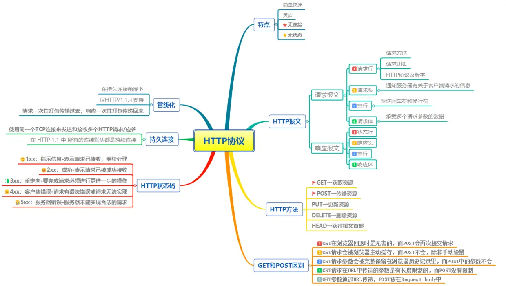
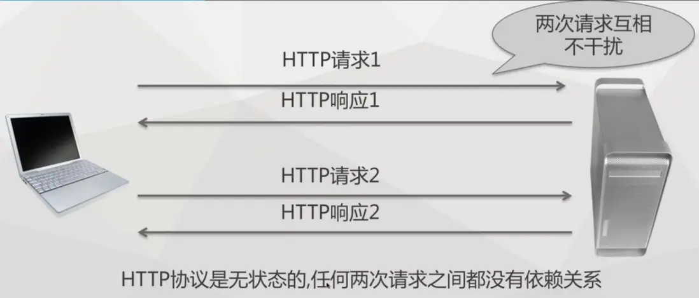
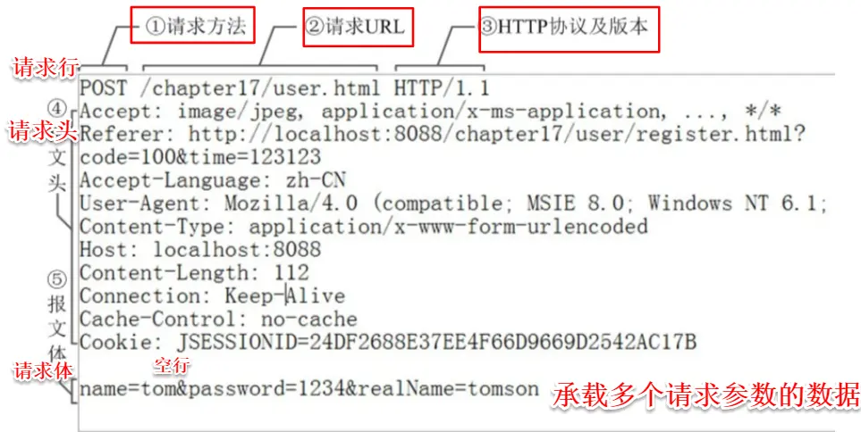
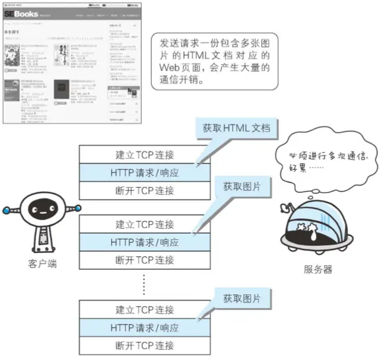
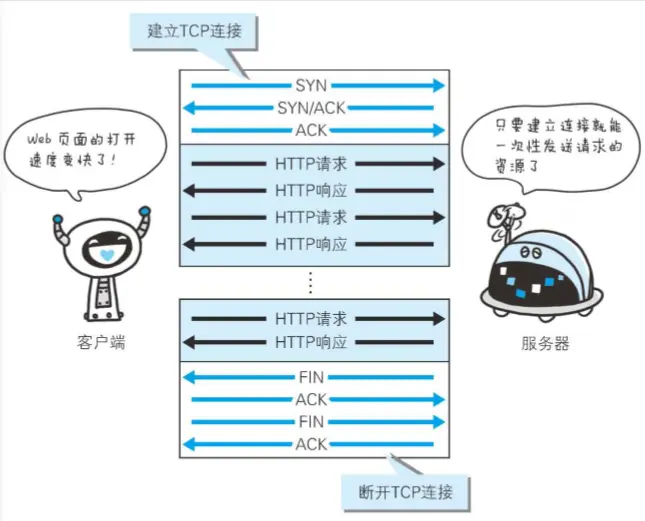
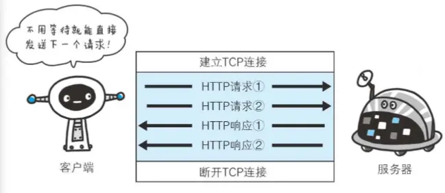

HTTP协议是Hyper Text Transfer Protocol（超文本传输协议）的缩写,是用于从万维网服务器传输超文本到本地浏览器的传送协议。HTTP 是基于 TCP/IP 协议通信协议来传递数据（HTML 文件, 图片文件, 查询结果等）。它不涉及数据包（packet）传输，主要规定了客户端和服务器之间的通信格式，默认使用80端口。

1、简单快速：客户向服务器请求服务时，只需传送请求方法和路径。请求方法常用的有GET、HEAD、PUT、DELETE、POST。每种方法规定了客户与服务器联系的类型不同。由于HTTP协议简单，使得HTTP服务器的程序规模小，因而通信速度很快。
2、灵活：HTTP允许传输任意类型的数据对象。
3、无连接：无连接的含义是限制每次连接只处理一个请求。服务器处理完客户的请求，并收到客户的应答后，即断开连接。采用这种方式可以节省传输时间。
4、无状态：HTTP协议是无状态的，HTTP 协议自身不对请求和响应之间的通信状态进行保存。任何两次请求之间都没有依赖关系。直观地说，就是每个请求都是独立的，与前面的请求和后面的请求都是没有直接联系的。协议本身并不保留之前一切的请求或 响应报文的信息。这是为了更快地处理大量事务，确保协议的可伸缩性，而特意把 HTTP 协议设计成如此简单的。

Http报文包括请求报文和响应报文两大部分，其中请求报文由请求行（request line）、请求头（header）、空行和请求体四个部分组成。而响应报文由状态行、响应头部、空行和响应体四个部分组成。接下来我们详细介绍下请求报文的各个部分及其作用。

1、请求行，用来说明请求类型,要访问的资源以及所使用的HTTP版本。
POST /chapter17/user.html HTTP/1.1以上代码中“POST ”代表请求方法，“/chapter17/user.html” 表示URI，“HTTP/1.1”代表协议和协议的版本。现在比较流行的是Http1.1版本
2、请求头由关键字/值对组成，每行一对，关键字和值用英文冒号“:”分隔。
请求头部通知服务器有关于客户端请求的信息。它包含许多有关的客户端环境和请求正文的有用信息。其中比如：
Host，表示主机名，虚拟主机；
Connection,HTTP/1.1增加的，使用keepalive，即持久连接，一个连接可以发多个请求；
User-Agent，请求发出者，兼容性以及定制化需求。
3、最后一个请求头之后是一个空行，这个行非常重要，它表示请求头已经结束，接下来的是请求正文。
4、请求体，可以承载多个请求参数的数据
name=tom&password=1234&realName=tomson上面代码，承载着name、password、realName 三个请求参数。
GET用于信息获取，是安全的 和 幂等的。
所谓安全的意味着该操作用于获取信息而非修改信息。换句话说，GET 请求一般不应产生副作用。就是说，它仅仅是获取资源信息，就像数据库查询一样，不会修改，增加数据，不会影响资源的状态。
幂等的意味着对同一URL的多个请求应该返回同样的结果。
HEAD 类似于get请求，只不过返回的响应中没有具体的内容，用于获取报头
POST 向指定资源提交数据进行处理请求（例如提交表单或者上传文件）。数据被包含在请求体中。
PUT 从客户端向服务器传送的数据取代指定的文档的内容。
DELETE 请求服务器删除指定的页面。
GET在浏览器回退时是无害的，而POST会再次提交请求
GET请求会被浏览器主动缓存，而POST不会，除非手动设置
GET请求参数会被完整保留在浏览器历史记录里，而POST中的参数不会被保留
GET请求在URL中传送的参数是有长度限制的，而POST没有限制
GET 可提交的数据量受到URL长度的限制，HTTP 协议规范没有对 URL 长度进行限制。这个限制是特定的浏览器及服务器对它的限制
理论上讲，POST 是没有大小限制的，HTTP 协议规范也没有进行大小限制，出于安全考虑，服务器软件在实现时会做一定限制
GET参数通过URL传递，POST放在Request body中
HTTP 响应与 HTTP 请求相似，HTTP响应也由3个部分构成，分别是：
状态行
响应头(Response Header)
响应正文
状态行由协议版本、数字形式的状态代码、及相应的状态描述，各元素之间以空格分隔。
下面是一个HTTP响应的例子：
HTTP/1.1 200 OK
Server:Apache Tomcat/5.0.12
Date:Mon,6Oct2003 13:23:42 GMT
Content-Length:112
<html>...状态代码有三位数字组成，第一个数字定义了响应的类别，共分五种类别:
1xx：指示信息--表示请求已接收，继续处理
2xx：成功--表示请求已被成功接收、理解、接受
3xx：重定向--要完成请求必须进行更进一步的操作
4xx：客户端错误--请求有语法错误或请求无法实现
5xx：服务器端错误--服务器未能实现合法的请求
比如我们平时常见的状态码：
200 OK 客户端请求成功
301 Moved Permanently 请求永久重定向
302 Moved Temporarily 请求临时重定向
304 Not Modified 文件未修改，可以直接使用缓存的文件。
400 Bad Request 由于客户端请求有语法错误，不能被服务器所理解。
401 Unauthorized 请求未经授权。这个状态代码必须和WWW-Authenticate报头域一起使用
403 Forbidden 服务器收到请求，但是拒绝提供服务。服务器通常会在响应正文中给出不提供服务的原因
404 Not Found 请求的资源不存在，例如，输入了错误的URL
500 Internal Server Error 服务器发生不可预期的错误，导致无法完成客户端的请求。
503 Service Unavailable 服务器当前不能够处理客户端的请求，在一段时间之后，服务器可能会恢复正常。HTTP协议的初始版本中，每进行一次HTTP通信就要断开一次TCP连接。以当年的通信情况来说，因为都是些容量很小的文本传输，所以即使这样也没有多大问题。可随着 HTTP 的 普及，文档中包含大量图片的情况多了起来。比如，使用浏览器浏览一个包含多张图片的 HTML 页面时，在发送请求访问 HTML 页面资源的同时，也会请 求该 HTML 页面里包含的其他资源。因此，每次的请求都会造成无谓的 TCP 连接建立和断开，增加通信量的 开销。

为解决上述 TCP 连接的问题，HTTP/1.1 和一部分的 HTTP/1.0 想出了持久连接（HTTP Persistent Connections，也称为 HTTP keep-alive 或 HTTP connection reuse）的方法。持久连接的特点是，只要任意一端没有明确提出断开连接，则保持TCP连接状态

持久连接的好处在于减少了 TCP 连接的重复建立和断开所造成的额外开销，减轻了服务器端的负载。另外， 减少开销的那部分时间，使 HTTP 请求和响应能够更早地结束，这样 Web 页面的显示速度也就相应提高了。
在 HTTP/1.1 中，所有的连接默认都是持久连接，但在 HTTP/1.0 内并未标准化。虽然有一部分服务器通过非标准的手段实现了持久连接，但服务器端不一定能够支持持久连接。毫无疑问，除了服务器端，客户端也需要支持持久连接。
持久连接使得多数请求以管线化（pipelining）方式发送成为可能。从前发送请求后需等待并收到响应，才能 发送下一个请求。管线化技术出现后，不用等待响应亦可直接发送下一个请求。
这样就能够做到同时并行发送多个请求，而不需要一个接一个地等待响应了。通俗地讲，请求打包一次传输过去，响应打包一次传递回来。管线化的前提是在持久连接下。

假如当请求一个包含 10 张图片的 HTML Web 页面，与挨个连接相比，用持久连接可以让请求更快结束。 而管线化技术则比持久连接还要快。请求数越多，时间差就越明显。客户端需要请求这十个资源。以前的做法是，在同一个TCP连接里面，先发送A请求，然后等待服务器做出回应，收到后再发出B请求，以此类推，而管道机制则是允许浏览器同时发出这十个请求，但是服务器还是按照顺序，先回应A请求，完成后再回应B请求。
于是在使用持久连接的情况下，某个连接上消息的传递类似于
请求1->响应1->请求2->响应2->请求3->响应3
管线化方式发送变成了类似这样：
请求1->请求2->请求3->响应1->响应2->响应3